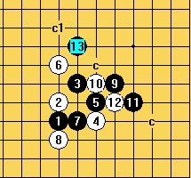

溪峡月三打求教
首页
五子棋交流
#1 溪峡月三打求教 作者：陈唯一 发表时间：2011-7-28 18:41:59
我的简谱 溪峡月.rar
溪峡月.rar ［ 失落刀 于 2011-7-29 13:39:14 时花20金币送鲜花一朵］
#2 Re:溪峡月三打求教 作者：屏蔽 发表时间：2011-7-28 21:44:52
d23.rar
残月那个变化对面打点我做过地毯。
这是个毛巾，你对照下看盘端。
［ 白河愁 于 2011-7-28 21:49:20 时花20金币送鲜花一朵］
#3 Re:溪峡月三打求教 作者：陈唯一 发表时间：2011-7-28 22:52:48
LS这个到处都有的。就是有这个也有盘端。
#4 Re:溪峡月三打求教 作者：屏蔽 发表时间：2011-7-28 23:18:19
那你说说哪里有盘端噻……
顺便一提，那谱是我自己一个点一个点做的，不是什么到处都有的给你一份……
［ 失落刀 于 2011-7-29 13:59:08 时花20金币送鲜花一朵］
#5 Re:溪峡月三打求教 作者：陈唯一 发表时间：2011-7-29 0:03:19
=======上图对应的爱五子棋谱代码如下，以便你拆解：========
h8h9i10j8j9h11i8h7k10j10l9k9
======================================================按这谱，右边明显不够空间杀
#6 Re:溪峡月三打求教 作者：苯酚 发表时间：2011-7-29 0:12:00
 ［ 陈唯一 于 2011-7-29 0:35:53 时花20金币送鲜花一朵］
#7 Re:溪峡月三打求教 作者：陈唯一 发表时间：2011-7-29 0:37:01
=======上图对应的爱五子棋谱代码如下，以便你拆解：========
h8h9j9j8i10h11i8h7k10j10l9k9i11
======================================================这样简单一点。这个五必胜了。
［此帖子已被 陈唯一 在 2011-7-29 0:38:10 编辑过］
［此帖子已被 陈唯一 在 2011-7-29 0:40:19 编辑过］
［ 潇洒 于 2011-7-29 2:22:56 时花20金币送鲜花一朵］
#8 Re:溪峡月三打求教 作者：陈唯一 发表时间：2011-7-29 0:41:37
也可以这样
=======上图对应的爱五子棋谱代码如下，以便你拆解：========
h8h9j9j8i10h11i8h7k10j10l9k9l8l7i11
====================================================== ［ 失落刀 于 2011-7-29 13:58:39 时花20金币送鲜花一朵］
#9 Re:溪峡月三打求教 作者：^版徒 发表时间：2011-7-29 0:48:16
=======上图对应的爱五子棋谱代码如下，以便你拆解：========
h8h9j9j8i10h11i8h7k10j10l9k9j11o1m8
======================================================13上下活都简单杀了,我终结者8秒,估计不是假杀, ［ 潇洒 于 2011-7-29 2:23:15 时花20金币送鲜花一朵］
#10 Re:溪峡月三打求教 作者：^版徒 发表时间：2011-7-29 0:51:44
简.rar［此帖子已被 ^版徒 在 2011-7-29 1:02:43 编辑过］
［ 失落刀 于 2011-7-29 13:40:22 时花20金币送鲜花一朵］
#11 Re:溪峡月三打求教 作者：侯军学棋 发表时间：2011-7-29 8:20:29
=======上图对应的爱五子棋谱代码如下，以便你拆解：========
h8h9j9j8i7i8g9f10j7k7g7h10i9f6g10g8k8l9f7h7i6g6i10h11k5
======================================================这里看不到杀啊？
#12 Re:溪峡月三打求教 作者：苯酚 发表时间：2011-7-29 9:57:21
=======上图对应的爱五子棋谱代码如下，以便你拆解：========
h8h9j9j8i7i8g9f10j7k7g7h10i9f6g10g8k8l9f7h7i6g6i10h11k5j6i5
======================================================
#13 Re:溪峡月三打求教 作者：侯军学棋 发表时间：2011-7-29 10:38:30
=======上图对应的爱五子棋谱代码如下，以便你拆解：========
h8h9j9j8i7i8g9f10j7k7g7h10i9f6g10g8k8l9f7h7i6g6i10h11k5j6i5e4f5i3
======================================================
#14 Re:溪峡月三打求教 作者：侯军学棋 发表时间：2011-7-29 12:16:57
通溪月就有问题
#15 Re:溪峡月三打求教 作者：陈唯一 发表时间：2011-7-29 12:20:37
=======上图对应的爱五子棋谱代码如下，以便你拆解：========
h8h9j9j8i7i8g9f10j7k7g7h10i9f6g10g8k8l9f7h7i6g6i10h11k5j6i5e4f5i3l5
======================================================
#16 Re:溪峡月三打求教 作者：侯军学棋 发表时间：2011-7-29 20:03:55
=======上图对应的爱五子棋谱代码如下，以便你拆解：========
h8h9i10j8j9i9k8l7h10g10k10j7i8l11k7k9g9f8l10j10i11k11i7j6g12h11i12m13l12i14
======================================================通溪月怎么杀
#17 Re:溪峡月三打求教 作者：江南新绿 发表时间：2011-7-29 21:33:05
你们在研究啥
=======上图对应的爱五子棋谱代码如下，以便你拆解：========
h8h9i10j8j9i9k8l7h10g10k10j7i8l11j12
====================================================== ［ 侯军学棋 于 2011-7-29 23:56:35 时花20金币送鲜花一朵］
［ 岑小鱼 于 2011-8-7 0:32:48 时花20金币送鲜花一朵］
#18 Re:溪峡月三打求教 作者：岑小鱼 发表时间：2011-8-7 0:33:30
差点没看见这个变化...
#19 Re:溪峡月三打求教 作者：棋元道 发表时间：2011-11-30 19:57:17
这个5必胜？
#20 Re:溪峡月三打求教 作者：t周 发表时间：2011-12-10 10:35:13